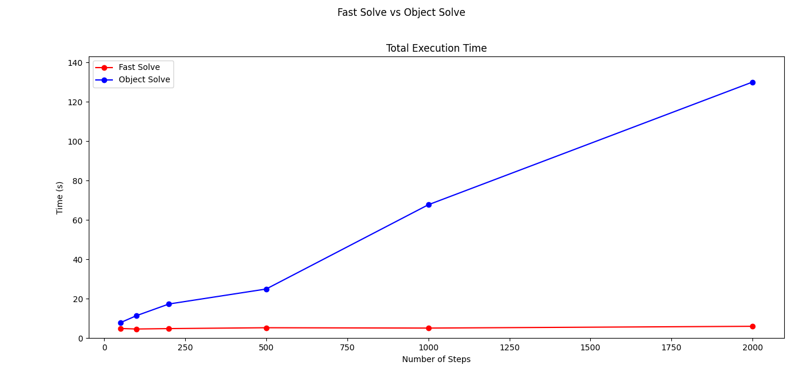
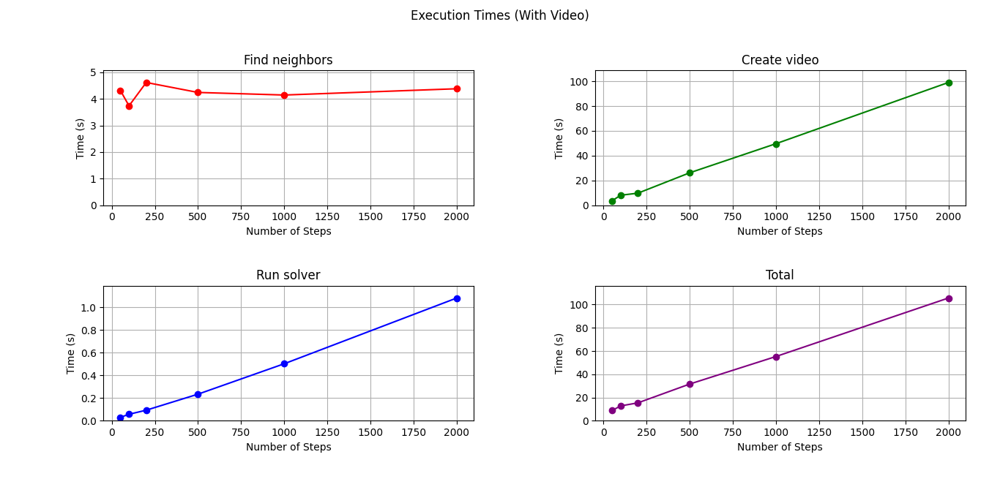
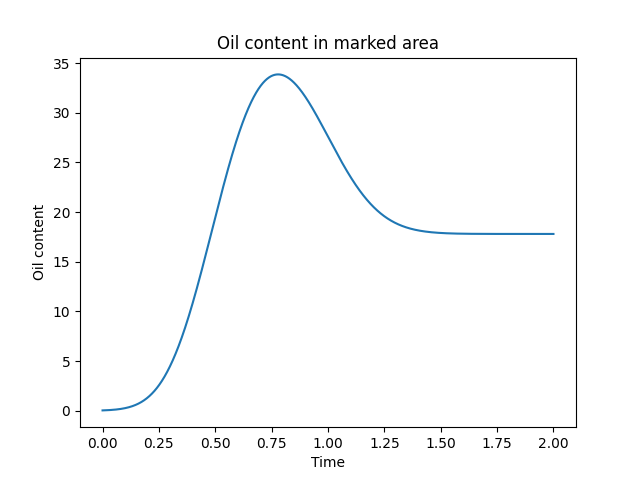

This project, as part of INF203 - Advanced Programming at NMBU, focuses on simulating the impact of an oil spill on the fishing grounds near Bay City. The simulation helps model the spread of oil over time, based on an initial oil distribution and a pre-defined flow field. The primary objective is to understand how the oil spreads, identify areas at risk, and determine potential mitigation strategies for Bay City's fishing industry.
The simulation uses a numerical model that divides the area of interest into small triangular cells, creating a mesh to represent the domain. At the initial time step (t = 0), the oil distribution is defined by the function u(x), which describes the concentration of oil at different locations. A velocity field v(x) controls the movement of the oil, pushing it across the domain.
Oil flow between cells is determined by a flux formula that calculates the amount of oil transferred across shared edges between neighboring cells. Each cell’s oil content is updated over time according to the flux and the properties of the cells, such as area and normal vectors at each edge. This iterative process allows for continuous updates of the oil distribution, with boundary conditions applied to ensure the simulation respects real-world physical constraints like coastlines.
To optimize performance, the simulation implements vector processing techniques. Instead of performing oil flow calculations one cell at a time, we used the NumPy library to vectorize the computations. By storing oil content and cell attributes (like dot products and area constants) in large arrays, we can apply operations across entire vectors at once. This dramatically reduced the computational time, improving the runtime efficiency by over 10,000% compared to an object-oriented approach. With the vectorized solver, a simulation that previously took minutes to compute was reduced to just a few seconds.
Figure 1 shows a comparison between the computation times of the object-oriented and vectorized solvers:
Figure 1: The vectorized solver significantly reduces computation time compared to the object-oriented approach, especially for large simulations with multiple iterations.
In addition to vectorization, we implemented multiprocessing to speed up video generation from the simulation results. Given the large number of frames involved in visualizing oil distribution over time, creating the video could become a bottleneck. By utilizing all available CPU cores, we significantly reduced the time required to generate the video output, ensuring that the slowest part of the process was optimized for performance.
Figure 2 illustrates the execution time for different components of the simulation, including the time required for video generation:
Figure 2: Execution times for various components of the simulation. Video generation times were significantly reduced by using multiprocessing.
The simulation was initialized with an oil distribution centered at x = (0.35, 0.45) and a given flow field that mimics ocean currents. We ran 2000 iterations with a fixed time step size (Δt), monitoring the amount of oil in a defined fishing area over time. Figure 3 below shows the oil content in the fishing area as a function of time:
Figure 3: Oil content in the fishing area over time, showing an initial peak followed by a gradual stabilization.
As seen in Figure 3, the simulation revealed an initial peak in oil content at t = 0.75, followed by a gradual decline. However, one key observation was that the oil content never fully reaches zero, suggesting a persistent source of oil in the system. This issue was traced back to a bug in the interaction between certain types of cells, particularly at the boundaries, where oil retained by line and vertex cells continued to influence the surrounding triangles. This bug mirrors some real-world scenarios, where oil can accumulate along coastal boundaries, though it needs to be addressed for longer-term simulations.
Despite this, the simulation provided valuable insights into the spread of oil and the time it takes for the fishing area to experience peak contamination. Further refinement of the model could improve long-term accuracy, especially in larger simulations.
The oil spill simulation successfully modeled the dynamics of oil spread in the fishing area, using vectorized computations and multiprocessing to optimize performance. The results were consistent with theoretical predictions, but some bugs need to be addressed to ensure accuracy over longer time frames. The use of vectorization and parallel processing not only sped up computations significantly but also demonstrated the importance of these techniques in handling complex simulations efficiently.
Future work will focus on refining the handling of boundary conditions and improving the realism of long-term simulations. By addressing these issues, we can enhance the predictive power of the simulation and better inform efforts to protect coastal environments from oil spills.